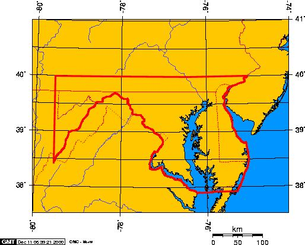
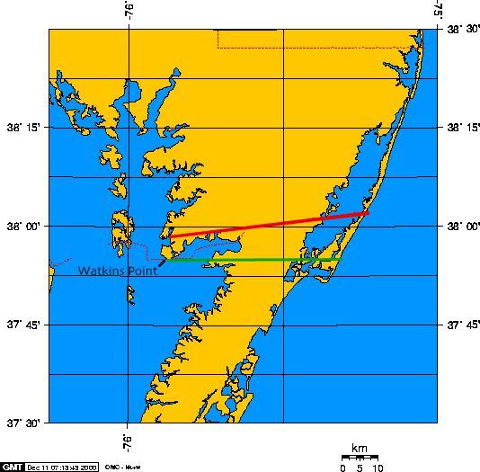
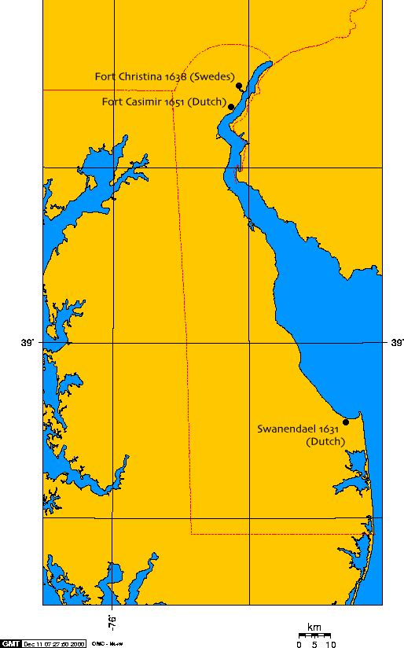
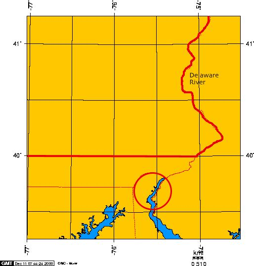
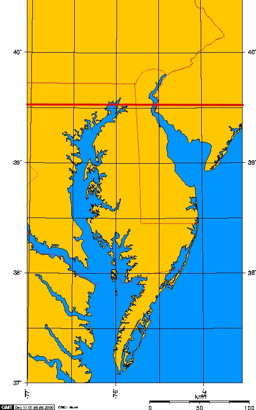
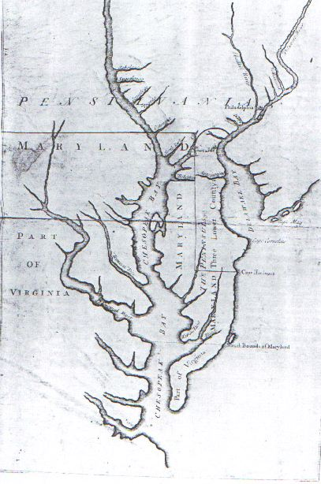
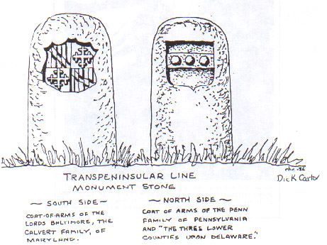
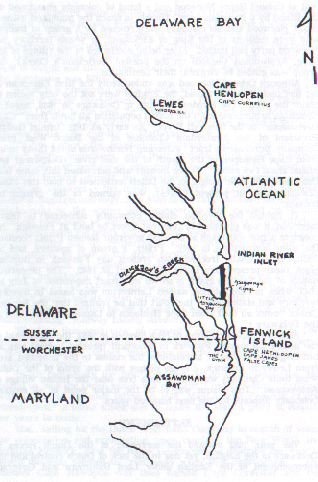

Visual Aides

Figure 1. Maryland's Boundaries as described in the charter (in bold red)
Note that the south branch of the Potomac river is taken as the southern boundary. Present day boundaries are indicated by light red lines.

Figure 2. The Calvert-Scarborough Line and the charter boundary
The Calvert-Scarborough Line is shown in red, and the boundary as described in the charter is shown in green. The charter line is a line due east from Watkins Point to the Ocean. The Calvert-Scarborough line did not begin at the right point, and ran slightly northeast.

Figure 3. Dutch and Swedish settlements on the Delaware River and Bay
Present-day state boundaries are show in red.

Figure 4. Charter Boundary of Pennsylvania and a circle of 12 miles radius around New Castle (in bold red)
Note that the circle does not interesect the 40 degree line, as was indicated in the Pennsylvania charter. Present day boundaries are indicated by light red lines.

Figure 5. The Location of 40 degrees north latitude as measured 180 miles due north from Cape Charles (in bold red)
William Penn reccomened this inaccurate way of detmining the location of the 40 degree line. This measurement would have given Pennsylvania land at the headwaters of the Chesapeake bay. Cape Charles is located at the southern tip of the Delmarva peninsula. Present-day boundaries are indicated by light red lines.

Figure 6. Map submitted by Lord Baltimore in the agreement of 1732
This map shows Cape Henlopen at the site of present-day Fenwick Island, where the transpeninsular line.

Figure 7. Markers on the Transpenisular Line
These markers were placed every 5 miles from Fenwick Island to the middle point, where the Mason-Dixon line begins.

Figure 8. The false cape at Fenwick Island
The false cape is shown as having the names 'Cape James' and 'Cape Heenloopen' The transpeninsular line was intended to be drawn at the northern cape, 'Henlopen', but Lord Balitmore's incorrect map would be responsible for maryland losing the lands of southern Delaware.